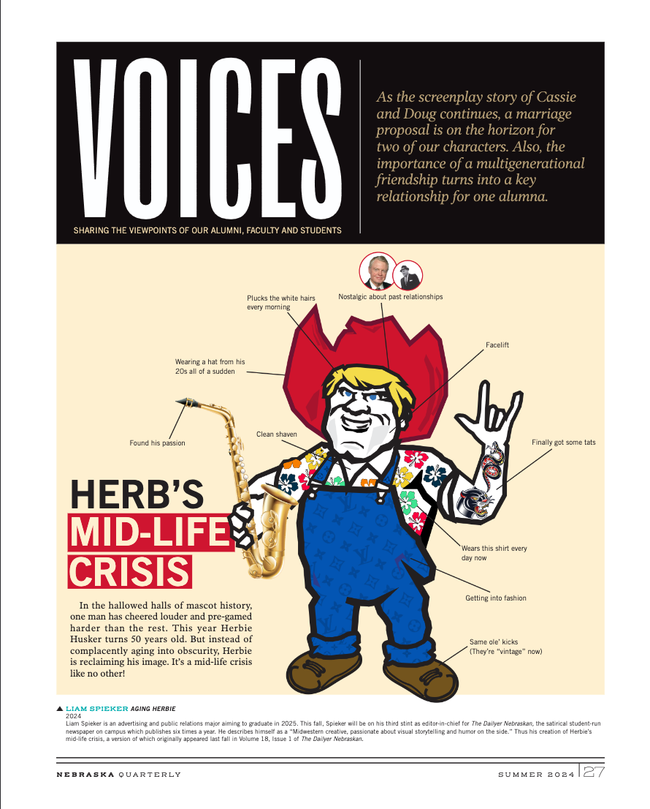

Herb's Midlife Crisis
A page commissioned by the Editor of Nebraska Quarterly. This was originally a Dailyer piece that claimed had a small moment of virality among UNL campus journalism professionals.

A page commissioned by the Editor of Nebraska Quarterly. This was originally a Dailyer piece that claimed had a small moment of virality among UNL campus journalism professionals.
